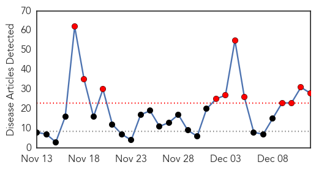
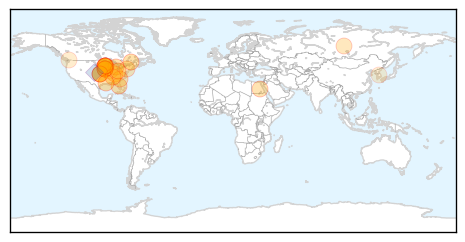
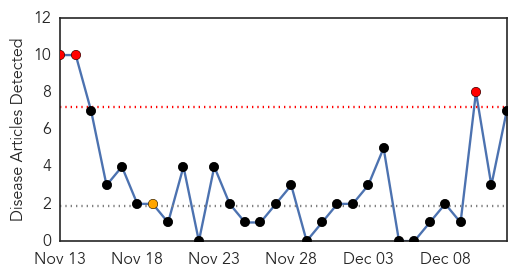

Influenza
30-Day Web Trend
11 alerts, 0 warnings

30-Day Twitter Trend
Article Locations
Article Confidences

Top Articles:
- 1.000
- Motlow, George Dickel, Manchester, Bonnaroo, Coffee County, Winchester, Monteagle, Tims Ford, Beechcraft, Lynchburg, Exchange, A.E.D.C.
- 1.000
- Iowa Department of Public Health Urges Iowans to Get Influenza Vaccine - TamaToledoNews.com
- 0.999
- Iowa Public Health encourages influenza vaccine
- 0.999
- Has the flu reached your home this season?
- 0.998
- Flu Strain Targets Children In Iowa
- 0.997
- Flu cases in Canada up sharply for 3rd straight week: PHAC
- 0.997
- Flu cases in Canada up sharply for 3rd straight week: PHAC
- 0.994
- Health officials: More than 185 people hospitalized in Minn. for
- 0.993
- ‘Outbreak’ Of Flu Cases Seen In Twin Cities Hospitals « CBS Minnesota
- 0.991
- Flu widespread in Louisiana - KATC.com
- 0.991
- Fifteen active flu outbreaks in Calgary says AHS - Calgary
- 0.989
- Vaccine is best protection against flu
- 0.984
- All You Need To Know About Flu Vaccination
- 0.961
- Kentucky Health Department urging residents to get flu shots; flu activity reported on rise
- 0.921
- Local flu patients are developing pneumonia
- 0.909
- Flu takes toll on area schools; teen death in southern Ohio confirmed; virus predicted to peak here Dec. 27
- 0.908
- Teacher dies of bird flu in Egypt's Sohag
- 0.903
- Another Abbotsford farm infected with avian flu; brings total to nine
- 0.891
- HEALTH OFFICIALS: Three flu viruses detected in Iowa
- 0.859
- Flu cases rising; Columbia school cancels classes
- 0.812
- Health care workers ordered to wear masks
- 0.761
- Russia bans import of Dutch poultry owing to bird flu virus
- 0.707
- Debunking Vaccine Myths Can Have An Unintended Effect
- 0.697
- Medical examiner: Owatonna teen who died had flu, pneumonia
- 0.624
- Owatonna Schools, Steele County Work to Stop Flu Spread
- 0.574
- Avian flu confirmed in ninth barn in B.C. as outbreak continues
- 0.531
- Initial report says Owatonna teen died of natural causes
- 0.520
- Bird flu confirmed in ninth barn in B.C.
Top Tweets:
- 0.776
- RT: @influenza_bio "Recently the regional response to the Ebola epidemic has been extremely effective in slowing its spread."
Measles
30-Day Web Trend
3 alerts, 1 warnings

30-Day Twitter Trend
0 alerts, 0 warnings

Article Locations


Article Confidences

Top Articles:
- 0.811
- Measles: Hundreds in Perth could have been exposed to virus during man's contagious phase
- 0.716
- In Haiti, A Hospital Designed with Women in Mind - Haiti
- 0.713
- Michigan adds new requirement for parents who want vaccine waivers
- 0.690
- Vaccine Waivers Harder to Get Under New Rules
- 0.574
- Still no alternative to the theory that Columbus brought syphilis across the Atlantic
- 0.517
- Syphilis sailed the ocean blue: why a bent femur won’t overturn Columbus theory
- 0.501
- Disabled by Pakistan's criminally negligent doctors
Top Tweets:
-
No tweets found for Dec 12, 2014